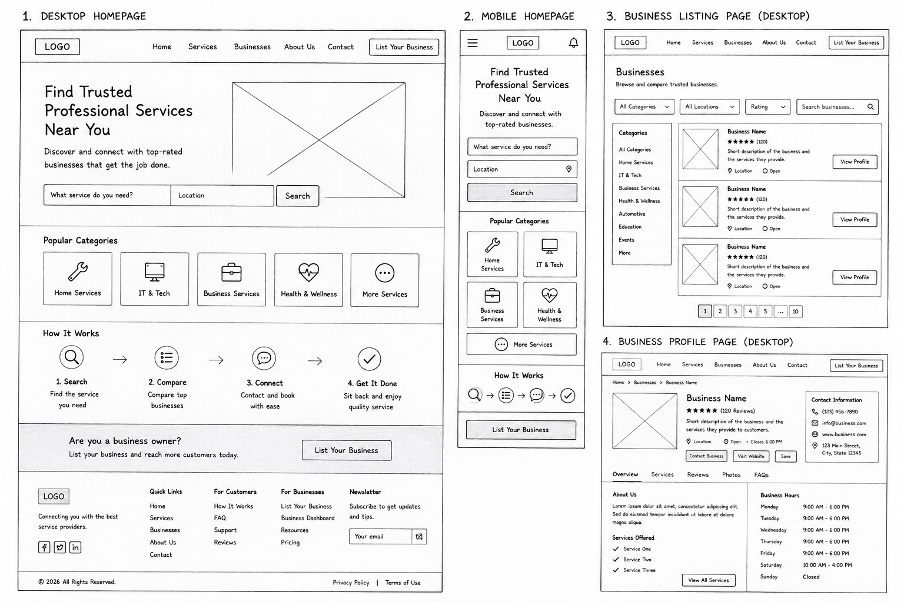

Site Name
Express Hands
Reason for the Name: The name Express Hands represents a fast, dependable, and convenient platform that connects customers with skilled professionals. It reflects the idea of providing helping hands whenever people need trusted services.
Proposed Domain: expresshands.ng
Site Purpose
Express Hands is a professional service connection platform that helps users find trusted businesses and skilled service providers within their location. Customers can browse service categories, search for businesses, compare providers, view ratings and reviews, and contact businesses directly.
The website also provides an opportunity for business owners to register and promote their services, helping them reach more customers through an easy-to-use online directory.
Target Audience
- Homeowners looking for reliable service providers.
- Individuals needing emergency repair services.
- Small and medium-sized businesses seeking professional contractors.
- Professional artisans and technicians wanting to advertise their services.
- Anyone searching for trusted local businesses.
User Scenarios
- How can I find a trusted electrician near my location?
- Which business has the highest customer ratings for plumbing services?
- How do I register my business on Express Hands?
- Can I compare multiple service providers before contacting one?
- Where can I view business contact information and operating hours?
Color Scheme
#0F4C81
Primary Color
Header, navigation, headings, buttons
#1FA971
Secondary Color
Icons, highlights, success messages, links
#F4B400
Accent Color
Call-to-action buttons and badges
#F8FAFC
Background Color
Page background and content sections
These colors create a clean, trustworthy, and professional appearance while maintaining good accessibility and readability.
Typography
| Font | Usage |
|---|---|
| Poppins | Page titles, headings, navigation, buttons |
| Open Sans | Body text, paragraphs, lists, forms |
Sample Heading using Poppins
This paragraph demonstrates the Open Sans font that will be used throughout the website for readability and accessibility.
Planned Website Pages
-
Home
Introduces Express Hands, highlights popular service categories, explains how the platform works, and encourages users to search for businesses. -
Businesses
Displays searchable and filterable business listings by category, location, and rating. -
Business Profile
Provides detailed information about each business, including services offered, ratings, contact details, reviews, location, and business hours.
Planned Features
- Responsive layout for desktop, tablet, and mobile devices.
- Search businesses by keyword.
- Filter businesses by category and location.
- Business profile pages.
- Business ratings and reviews.
- JSON data for business listings.
- Interactive search and filtering using JavaScript.
- Accessible design following WCAG best practices.
Wireframes
The following sketches illustrate the planned layouts for the Express Hands website. They include desktop and mobile homepage designs as well as business listing and profile pages.
